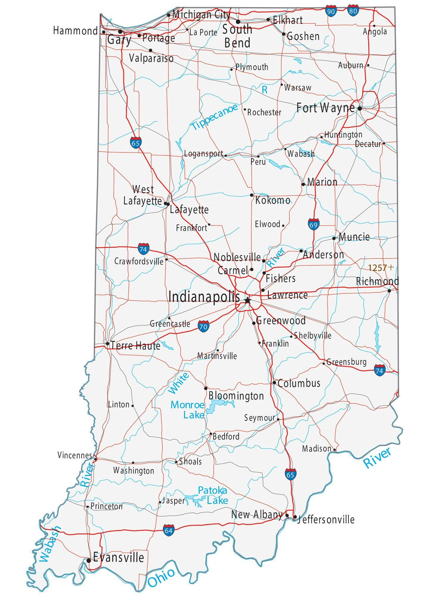

Here is where the facts about Indiana's climate and terrain would be discussed. This helps explain what types of animals would be found here. You might also see information about the size of the state, population, and the assumed number of animal species that live here. May include some fun facts about things like invasive species, or the relationship between the community and wildlife: example, Animal Control or rescue organizations. Here is where the facts about Indiana's climate and terrain would be discussed. This helps explain what types of animals would be found here. You might also see information about the size of the state, population, and the assumed number of animal species that live here. May include some fun facts about things like invasive species, or the relationship between the community and wildlife: example, Animal Control or rescue organizations.
